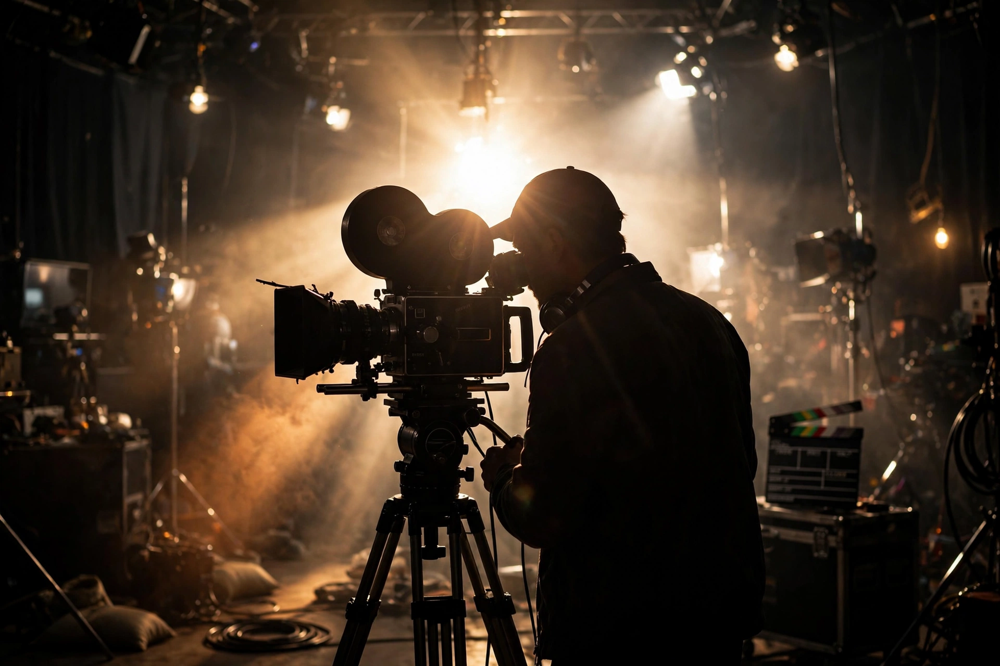

| Auteur theory | |
|---|---|
 The director as auteur | |
| Origin | France, early 1950s |
| Key texts | Truffaut, "A Certain Tendency of the French Cinema" (1954); Astruc, "caméra-stylo" (1948) |
| Associated journal | Cahiers du Cinéma |
In film theory, auteur theory holds that a film reflects its director's personal creative vision as if the director were the work's "author" (French: auteur). The theory proposes that although a film is produced through an industrial, collaborative process, a great director stamps the material with a recognisable style and recurring themes, so that the body of their films can be read like the works of a novelist or painter.
The idea grew from Alexandre Astruc's 1948 notion of the caméra-stylo ("camera-pen") and was developed by the young critics of Cahiers du Cinéma in the 1950s. François Truffaut's 1954 essay "A Certain Tendency of the French Cinema" attacked the screenwriter-dominated French "Tradition of Quality" and argued for the politique des auteurs — evaluating directors by the personal signature across their filmography, including genre directors working within the Hollywood studio system. The Cahiers critics then put the theory into practice in the French New Wave, beginning with films such as Breathless.
Andrew Sarris imported the theory to the United States in "Notes on the Auteur Theory in 1962" and The American Cinema (1968), provoking a famous debate with Pauline Kael, who criticised its cult of the director and neglect of screenwriters and collaborators. Later scholarship has qualified the theory — acknowledging collective production, genre and studio constraints — but the auteur concept remains central to film criticism, marketing and festival culture, and underpinned the director-driven New Hollywood era.